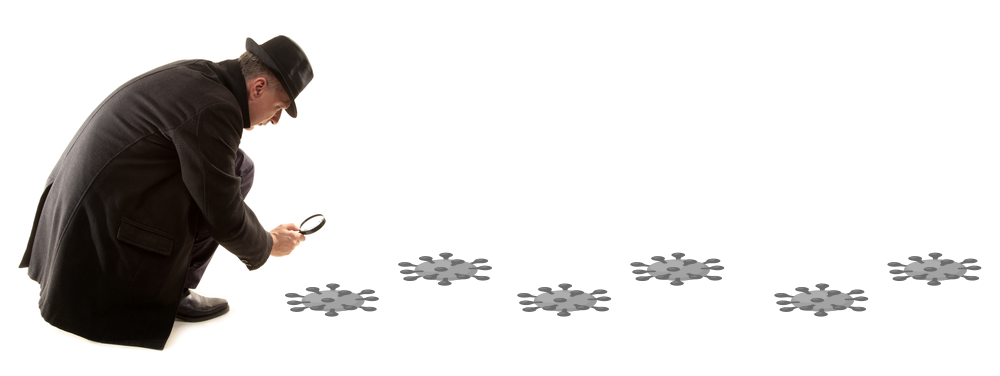
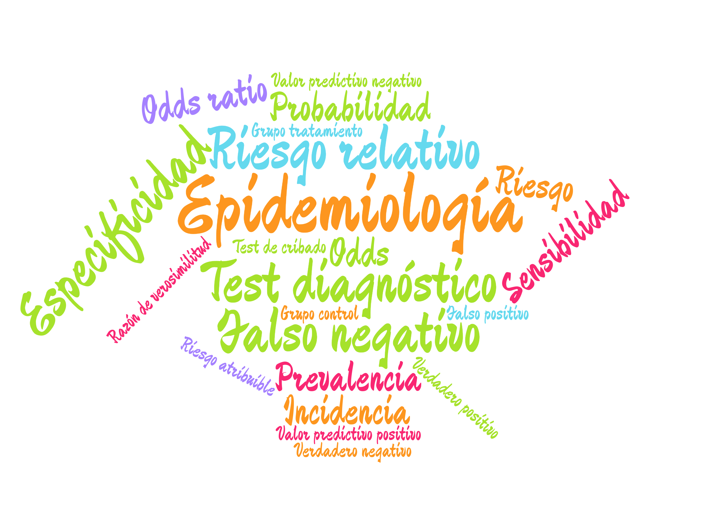

1 Introducción a la Epidemiología
1.1 ¿Qué es la Epidemiología?
La palabra epidemiología viene del griego epi (sobre), demos (gente) y logos (estudio), es decir, el estudio de lo que le ocurre a las poblaciones.
Definición 1.1 (Epidemiología) En el ámbito de la salud pública, la Epidemiología es la rama de la Medicina que se encarga del estudio de la distribución y las causas de los eventos relacionados con la salud (normalmente enfermedades) en las poblaciones, y de la aplicación de este estudio al control de los problemas de salud pública.

Obsérvese que, a diferencia de la Medicina clínica, que se ocupa del diagnóstico y el tratamiento de un paciente concreto, la Epidemiología estudia siempre poblaciones. Sus dos preguntas fundamentales son:
- ¿Cuánta enfermedad hay y cómo se distribuye? (Epidemiología descriptiva)
- ¿Qué factores la causan o la previenen? (Epidemiología analítica)
Debido a la epidemia provocada por el coronavirus, la Epidemiología se ha convertido en una de las ramas de la Medicina que más interés despiertan.
Sin embargo, mucho antes de la COVID, la Epidemiología ya había servido en otros momentos históricos para resolver o controlar algunos de los problemas de salud pública más serios que ha enfrentado la humanidad.
1.1.1 Algunos descubrimientos históricos
- 1854: John Snow determina que la causa de la epidemia de cólera que asolaba Londres era que el agua estaba contaminada con heces.
- 1898: Ronald Ross averigua que el transmisor de la malaria es el mosquito Anopheles.
- 1950: Se descubre que fumar es el principal factor de riesgo del cáncer de pulmón.
- 1954: Se valida la primera vacuna contra la poliomielitis (la de Jonas Salk).
- 1970: Se observa que el ejercicio físico y una dieta sana reducen el riesgo de sufrir un infarto.
- 1983: Robert Gallo, Luc Montagnier y Françoise Barré-Sinoussi identifican el virus que causa el SIDA. Poco después se observó que el riesgo de contraer el VIH aumentaba con ciertas prácticas sexuales y con el consumo de algunos tipos de drogas.
- 2020: Y llegó la COVID…
1.2 El lenguaje de la Epidemiología
En estos tiempos de pandemia un montón de términos técnicos de la Epidemiología se han convertido en lugares comunes gracias a los medios de comunicación.

Sin embargo, muchos de estos términos se utilizan de manera errónea, incluso por los propios medios de comunicación, y generan confusión en la población no experta. En este manual se explican los principales conceptos epidemiológicos usados en el control de enfermedades como la COVID y se ilustra su uso con ejemplos de aplicación.
1.3 Índices epidemiológicos
Los índices epidemiológicos que se estudian en este manual pueden agruparse en tres bloques:
- Medidas de frecuencia de una enfermedad (Capítulo 3)
-
Miden cuánta enfermedad hay en una población.
- Prevalencia.
- Incidencia o riesgo absoluto.
- Medidas de asociación (Capítulo 4)
-
Miden la relación entre la exposición a un factor y la aparición de la enfermedad.
- Riesgo y odds.
- Riesgo relativo y odds ratio.
- Medidas de fiabilidad de los tests diagnósticos (Capítulo 5 y Capítulo 6)
-
Miden la capacidad de un test para diagnosticar o descartar la enfermedad.
- Sensibilidad y especificidad.
- Valores predictivos.
- Curva ROC y área bajo la curva.
Todos estos índices están basados en el cálculo de probabilidades, por lo que en el siguiente capítulo se introduce el concepto de probabilidad y sus principales propiedades.